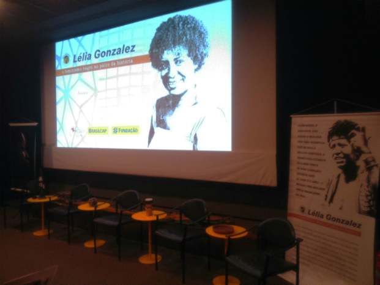
Tributo a Lélia Gonzalez: O feminismo negro no palco da história.
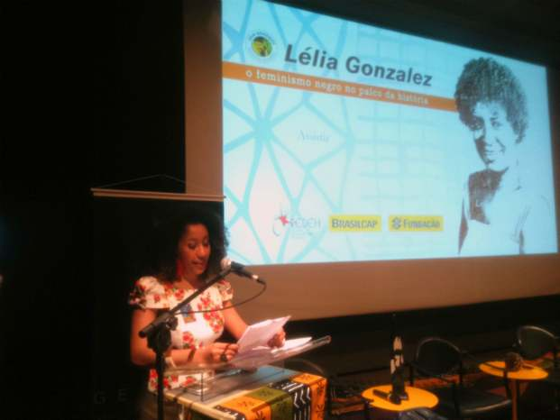
A jornalista Juliana Gonçalves, integrante do Núcleo Impulsor da Marcha das Mulheres Negras no Estado de São Paulo, conduziu o cerimonial do evento.
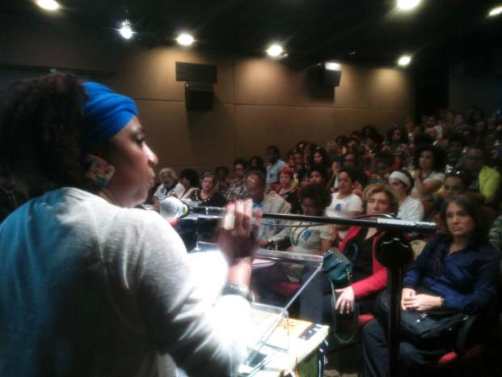
Maria Sylvia, presidenta do Geledés - Instituto da Mulher Negra.
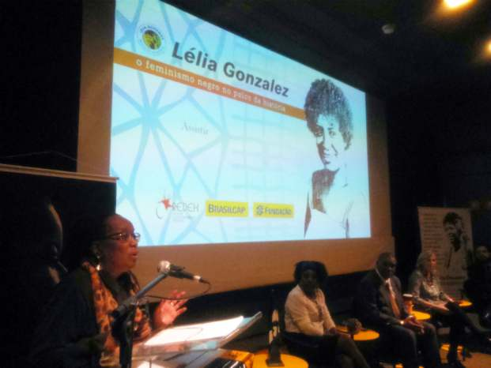
Sueli Carneiro fala sobre o pensamento de Lélia e seu legado.
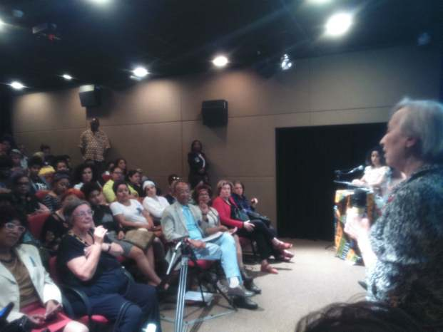
Schuma Schumaher, coordenadora do projeto em homenagem a Lélia.
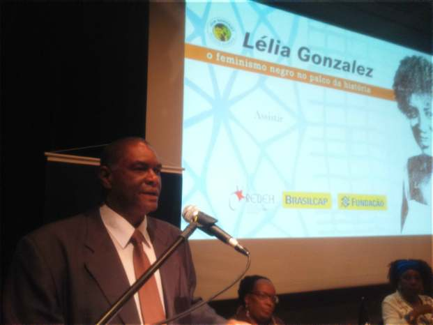
Rubens Rufino, filho de Lélia.
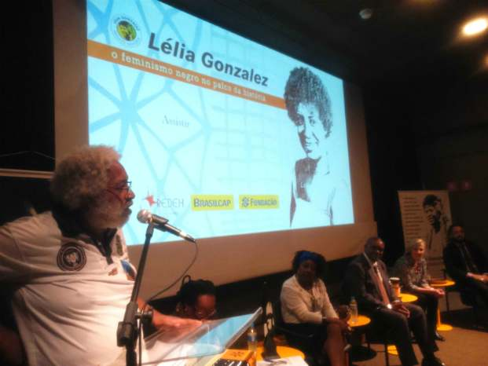
Milton Barbosa, fundador, junto com Lélia, do Movimento Negro Unificado (MNU).
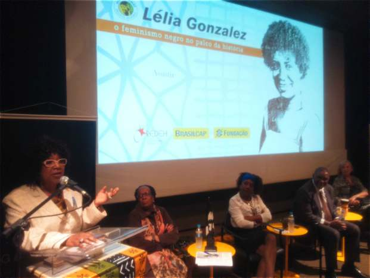
Dulce Pereira, arquiteta e amiga de Lélia.
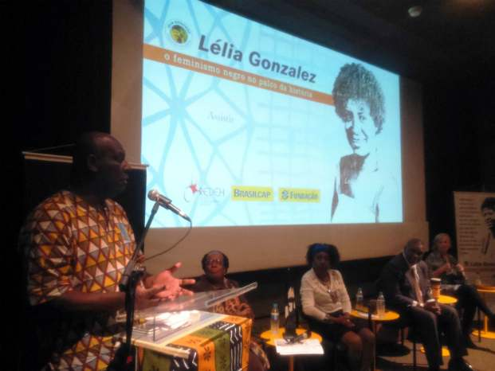
Rafael Pinto, coordenador do Observatório de Políticas de Promoção da Igualdade Racial da Prefeitura de São Paulo.
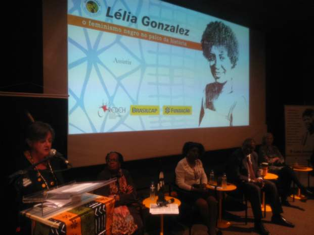
Albertina Costa, pesquisadora da Fundação Carlos Chagas.
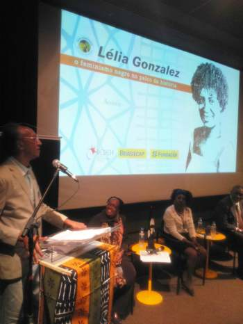
Hélio Silva.
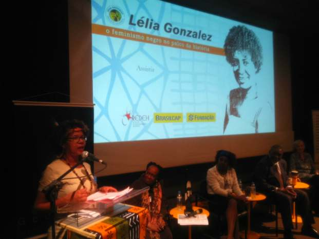
Lenny Blue.
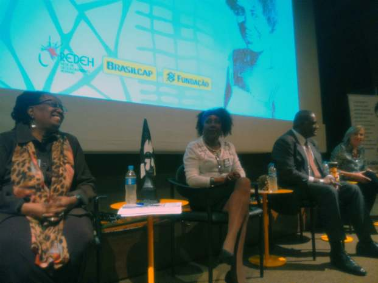
Sueli emocionada e alegre à frente do tributo a Lélia.
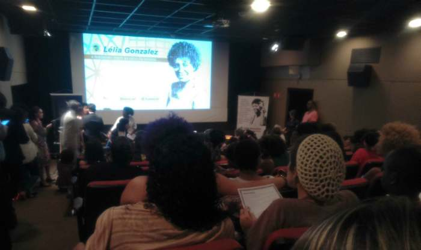
Participantes aguardam início do evento, que lotou dois auditórios e teve fila de espera na área externa do CCBB.
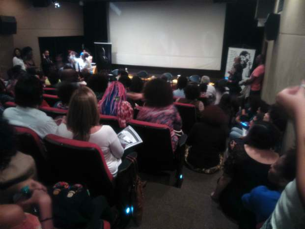
Participantes aguardam início do evento, que lotou dois auditórios e teve fila de espera na área externa do CCBB
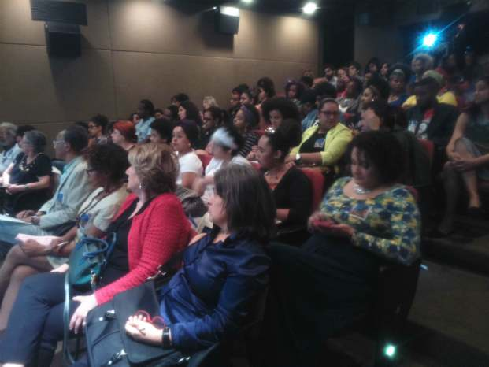
Plenário atento às homenagens.
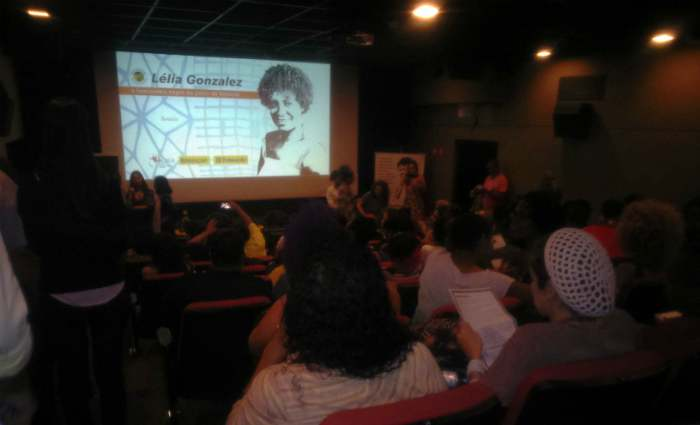
Lélia Gonzales: Presente!
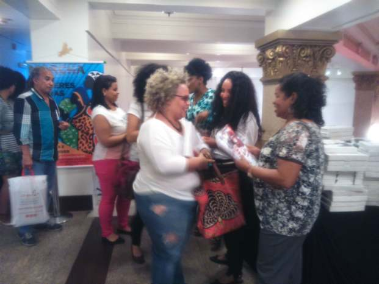
Fila para recebimento da fotobiografia e documentário sobre o pensamento de Lélia.